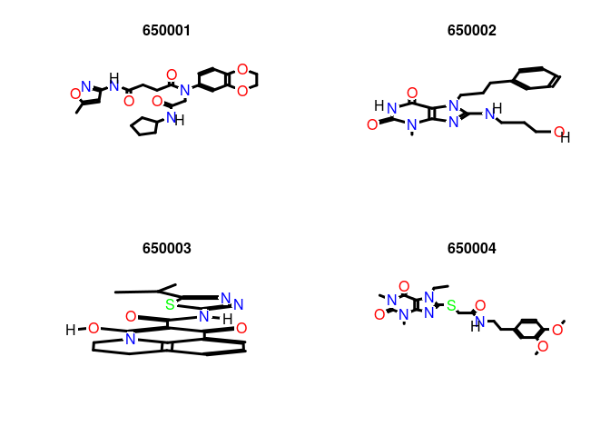
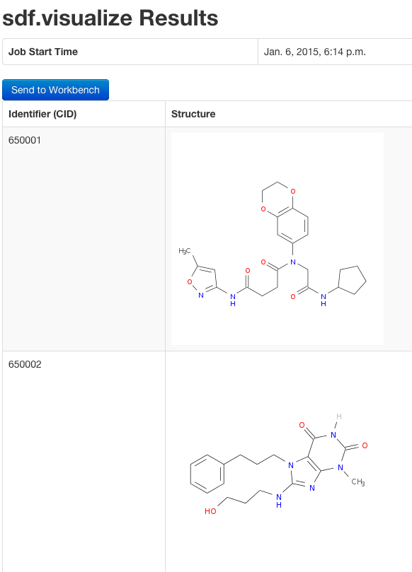

Installation
The R software for running ChemmineR can be downloaded from CRAN
(http://cran.at.r-project.org/). The ChemmineR package can be
installed from R using the bioLite install command.
source("http://bioconductor.org/biocLite.R") # Sources the biocLite.R installation script.
biocLite("ChemmineR") # Installs the package.
Loading the Package and Documentation
library("ChemmineR") # Loads the package
library(help="ChemmineR") # Lists all functions and classes
vignette("ChemmineR") # Opens this PDF manual from R
Five Minute Tutorial
The following code gives an overview of the most important
functionalities provided by ChemmineR. Copy and paste
of the commands into the R console will demonstrate their utilities.
Create Instances of SDFset class:
data(sdfsample)
sdfset <- sdfsample
sdfset # Returns summary of SDFset
## An instance of "SDFset" with 100 molecules
sdfset[1:4] # Subsetting of object
## An instance of "SDFset" with 4 molecules
sdfset[[1]] # Returns summarized content of one SDF
## An instance of "SDF"
##
## <<header>>
## Molecule_Name Source
## "650001" " -OEChem-07071010512D"
## Comment Counts_Line
## "" " 61 64 0 0 0 0 0 0 0999 V2000"
##
## <<atomblock>>
## C1 C2 C3 C5 C6 C7 C8 C9 C10 C11 C12 C13 C14 C15 C16
## O_1 7.0468 0.0839 0 0 0 0 0 0 0 0 0 0 0 0 0
## O_2 12.2708 1.0492 0 0 0 0 0 0 0 0 0 0 0 0 0
## ... ... ... ... ... ... ... ... ... ... ... ... ... ... ... ...
## H_60 1.8411 -1.5985 0 0 0 0 0 0 0 0 0 0 0 0 0
## H_61 2.6597 -1.2843 0 0 0 0 0 0 0 0 0 0 0 0 0
##
## <<bondblock>>
## C1 C2 C3 C4 C5 C6 C7
## 1 1 16 2 0 0 0 0
## 2 2 23 1 0 0 0 0
## ... ... ... ... ... ... ... ...
## 63 33 60 1 0 0 0 0
## 64 33 61 1 0 0 0 0
##
## <<datablock>> (33 data items)
## PUBCHEM_COMPOUND_CID PUBCHEM_COMPOUND_CANONICALIZED PUBCHEM_CACTVS_COMPLEXITY
## "650001" "1" "700"
## PUBCHEM_CACTVS_HBOND_ACCEPTOR
## "7" "..."
view(sdfset[1:4]) # Returns summarized content of many SDFs, not printed here
as(sdfset[1:4], "list") # Returns complete content of many SDFs, not printed here
An SDFset is created during the import of an SD file:
sdfset <- read.SDFset("http://faculty.ucr.edu/ tgirke/Documents/R_BioCond/Samples/sdfsample.sdf")
Miscellaneous accessor methods for SDFset container:
header(sdfset[1:4]) # Not printed here
header(sdfset[[1]])
## Molecule_Name Source
## "650001" " -OEChem-07071010512D"
## Comment Counts_Line
## "" " 61 64 0 0 0 0 0 0 0999 V2000"
atomblock(sdfset[1:4]) # Not printed here
atomblock(sdfset[[1]])[1:4,]
## C1 C2 C3 C5 C6 C7 C8 C9 C10 C11 C12 C13 C14 C15 C16
## O_1 7.0468 0.0839 0 0 0 0 0 0 0 0 0 0 0 0 0
## O_2 12.2708 1.0492 0 0 0 0 0 0 0 0 0 0 0 0 0
## O_3 12.2708 3.1186 0 0 0 0 0 0 0 0 0 0 0 0 0
## O_4 7.9128 2.5839 0 0 0 0 0 0 0 0 0 0 0 0 0
bondblock(sdfset[1:4]) # Not printed here
bondblock(sdfset[[1]])[1:4,]
## C1 C2 C3 C4 C5 C6 C7
## 1 1 16 2 0 0 0 0
## 2 2 23 1 0 0 0 0
## 3 2 27 1 0 0 0 0
## 4 3 25 1 0 0 0 0
datablock(sdfset[1:4]) # Not printed here
datablock(sdfset[[1]])[1:4]
## PUBCHEM_COMPOUND_CID PUBCHEM_COMPOUND_CANONICALIZED PUBCHEM_CACTVS_COMPLEXITY
## "650001" "1" "700"
## PUBCHEM_CACTVS_HBOND_ACCEPTOR
## "7"
Assigning compound IDs and keeping them unique:
cid(sdfset)[1:4] # Returns IDs from SDFset object
## [1] "CMP1" "CMP2" "CMP3" "CMP4"
sdfid(sdfset)[1:4] # Returns IDs from SD file header block
## [1] "650001" "650002" "650003" "650004"
unique_ids <- makeUnique(sdfid(sdfset))
## [1] "No duplicates detected!"
cid(sdfset) <- unique_ids
Converting the data blocks in an SDFset to a matrix:
blockmatrix <- datablock2ma(datablocklist=datablock(sdfset)) # Converts data block to matrix
numchar <- splitNumChar(blockmatrix=blockmatrix) # Splits to numeric and character matrix
numchar[[1]][1:2,1:2] # Slice of numeric matrix
## PUBCHEM_COMPOUND_CID PUBCHEM_COMPOUND_CANONICALIZED
## 650001 650001 1
## 650002 650002 1
numchar[[2]][1:2,10:11] # Slice of character matrix
## PUBCHEM_MOLECULAR_FORMULA PUBCHEM_OPENEYE_CAN_SMILES
## 650001 "C23H28N4O6" "CC1=CC(=NO1)NC(=O)CCC(=O)N(CC(=O)NC2CCCC2)C3=CC4=C(C=C3)OCCO4"
## 650002 "C18H23N5O3" "CN1C2=C(C(=O)NC1=O)N(C(=N2)NCCCO)CCCC3=CC=CC=C3"
Compute atom frequency matrix, molecular weight and formula:
propma <- data.frame(MF=MF(sdfset), MW=MW(sdfset), atomcountMA(sdfset))
propma[1:4, ]
## MF MW C H N O S F Cl
## 650001 C23H28N4O6 456.4916 23 28 4 6 0 0 0
## 650002 C18H23N5O3 357.4069 18 23 5 3 0 0 0
## 650003 C18H18N4O3S 370.4255 18 18 4 3 1 0 0
## 650004 C21H27N5O5S 461.5346 21 27 5 5 1 0 0
Assign matrix data to data block:
datablock(sdfset) <- propma
datablock(sdfset[1])
## $`650001`
## MF MW C H N O S
## "C23H28N4O6" "456.4916" "23" "28" "4" "6" "0"
## F Cl
## "0" "0"
String searching in SDFset:
grepSDFset("650001", sdfset, field="datablock", mode="subset") # Returns summary view of matches. Not printed here.
grepSDFset("650001", sdfset, field="datablock", mode="index")
## 1 1 1 1 1 1 1 1 1
## 1 2 3 4 5 6 7 8 9
Export SDFset to SD file:
write.SDF(sdfset[1:4], file="sub.sdf", sig=TRUE)
Plot molecule structure of one or many SDFs:
plot(sdfset[1:4], print=FALSE) # Plots structures to R graphics device

sdf.visualize(sdfset[1:4]) # Compound viewing in web browser

Structure similarity searching and clustering:
apset <- sdf2ap(sdfset) # Generate atom pair descriptor database for searching
data(apset) # Load sample apset data provided by library.
cmp.search(apset, apset[1], type=3, cutoff = 0.3, quiet=TRUE) # Search apset database with single compound.
## index cid scores
## 1 1 650001 1.0000000
## 2 96 650102 0.3516643
## 3 67 650072 0.3117569
## 4 88 650094 0.3094629
## 5 15 650015 0.3010753
cmp.cluster(db=apset, cutoff = c(0.65, 0.5), quiet=TRUE)[1:4,] # Binning clustering using variable similarity cutoffs.
##
## sorting result...
## ids CLSZ_0.65 CLID_0.65 CLSZ_0.5 CLID_0.5
## 48 650049 2 48 2 48
## 49 650050 2 48 2 48
## 54 650059 2 54 2 54
## 55 650060 2 54 2 54